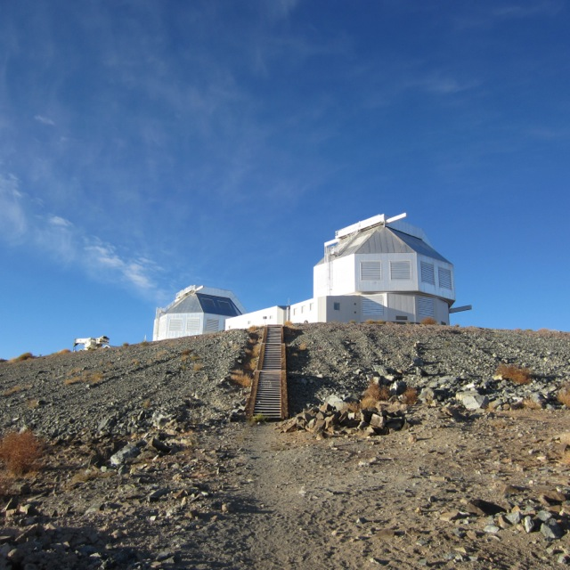
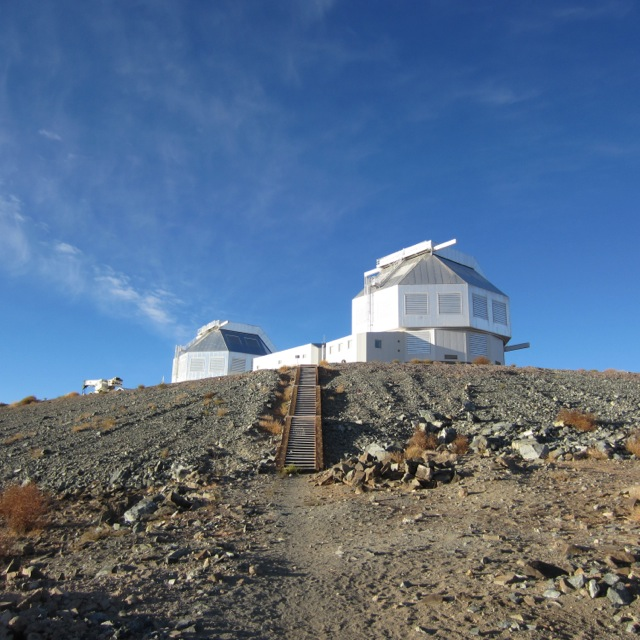

Megan M. Kiminki
(formerly Megan M. Bagley)


 


Hectosky
One of the final steps in reducing spectroscopic data is subtracting off the contribution from "sky" background, which includes:
- Airglow from the Earth's atmosphere (e.g., OH, O I, O2 line emission).
- Human-made light pollution.
- Emission from your target's immediate surroundings in space.
Sky subtraction is (usually) relatively easy when observing with a slit spectrograph: you can extract the sky spectrum immediately adjacent to your target spectrum. Fiber-fed spectrographs, however, present a challenge, as the adjacent sky is not observed simultaneously.
Typically, in a multi-fiber instrument, a handful of fibers are pointed at blank sky, allowing the observer to construct an average sky emission spectrum. This method doesn't work well in regions of strong, spatially-variable nebular emission. Instead, observers will often take an additional sky exposure offset from the target pointing by 3-5". Unfortunately, this means doubling your observing time.
This is where Hectosky comes in. Hectosky is an interactive, IDL-based pipeline designed to:
- Correctly subtract nebular emission lines using fits to the nearest sky spectrum.
- Maximize signal-to-noise in the subtraction of airglow lines by using all available sky spectra.
Hectosky fits a set of common nebular emission lines in the closest sky spectrum, removing those emission lines much more effectively than when an average sky spectrum is subtracted:
Above: Comparison of the result of subtracting an average sky spectrum (blue) with the result of subtracting sky emission with Hectosky (black). The original spectrum is shown in gray. (Figure from Kiminki et al. 2015.)
However, Hectosky uses an average sky spectrum for all other wavelengths, greatly increasing the signal-to-noise of the continuum and allowing you to use less of your limited telescope time taking sky spectra:
Above: Comparison of the continuum signal-to-noise for two stars: subtracting the single closest sky spectrum (gray) versus Hectosky's use of an average sky spectrum (black). (Figure from Kiminki et al. 2015.)
Hectosky was specifically written for use on data taken with the Hectospec multi-fiber spectrograph—and particularly for data reduced with Juan Cabanela's E-SPECROAD pipeline—but the algorithm can be adapted to data from other instruments.
The Hectosky source code, along with complete instructions for installation and use, can be found in my Hectosky repository on GitHub.